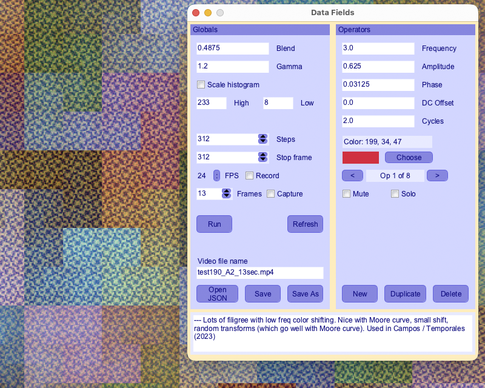

Class WaveSynthEditor
- All Implemented Interfaces:
processing.core.PConstants
WaveSynth Editor Sketch
The PixelAudio demo sketch WaveSynthEditor makes patterns that can be
animated and saved to video or played as an additive synthesis audio source. It
provides an introduction to the WaveSynth class and the WaveData objects
that WaveSynth uses to generate visual patterns and audio signals.

WaveSynthEditor lets you edit the attributes of a PixelAudio WaveSynth, including
its individual WaveData operators, using a nice GUI made with g4p_controls for Processing.
Patterns can be loaded from and saved to JSON files. You can experiment with a few
different PixelMapGen classes: a MultiGen built from Hilbert curves, a BoustropheGen,
and a DiagonalZigzagGen.
For audio signals, a WaveSynth behaves like an audio synthesizer that adds together
sine waves at different frequencies. The WaveSynthSequencer example sketch also
produces audio with a WaveSynth. This example provides a graphical
user interface for editing frequencies, colors and other properties of a WaveSynth.
Click on the WaveSynth image or press spacebar to hear the audio version of the image. Note that the appearance of the image is determined by the current sampling frequency, set in the initWaveSynth() method. For a higher sampling rate, there are more samples. One sampling rate I commonly use for the WaveSynth Editor is the number of pixels in the WaveSynth image. Though it may have more or less samples, the sound of the audio will not vary, as its frequency is governed by the sampling rate.
A WaveSynth depends on global attributes, such as gain (i.e. loudness or brightness) and
gamma (a sort of contrast setting), and on data objects. The data objects include
a bitmap, mapImage, that is a Processing PImage instance for the image representation
of the WaveSynth, a PixelAudioMapper that allows the WaveSynth to mediate between audio
data and image data, and an array of WaveData objects that define the individual
sine wave components of the WaveSynth. The PixelAudioMapper arranges colors controlled
by the WaveSynth audio functions along the PixelAudioMapper signal path. The WaveData
objects control individual "operators" (sine waves) that combine to make the image.
NOTE: Changes to data fields in the Control Panel may not be applied immediately to the WaveSynth image and audio. Click the Refresh button or hit return to force an update. Stepping to the next or previous operator will also refresh audio and image. If the display window is active, stepping to another frame 'y', 'u', or 'e' key commands) will also force an update.
When a WaveSynth is used to produce color patterns, each WaveData object in the waveDataList controls a color. The colors of the various WaveData objects are added together. The amplitude of the controlling sine wave controls the brightness of each color. The control panel in this example allows you to isolate individual WaveData operators to see how they affect the color patterns.
SAMPLING RATES FOR AUDIO AND FOR WAVESYNTH IMAGES
We use different sampling rates for audio playback and recording and for WaveSynth's additive synthesis algorithm. We use the standard sampling rate 48000 Hz for audio output. A 48000 Hz sampling rate fits conveniently with Hilbert curve dimensions. For the WaveSynth, which in this demo app relies on Hilbert curves to make patterns, we use (genWidth * genWidth) as the sampling rate for the sine waves that are added together to produce the WaveSynth image. If genWidth = 512, this value is 262144. You can change the audio sampling rate in the instance variables list or in setup(). You can change WaveSynth's sampling rate in the initWaveSynth() method.
In addition to the GUI commands, there are some useful key commands.
Key commands will NOT work when the control panel is the active window. Click on the display window to make it the active window and then try the commands. See the parseKey() method and the methods it calls for more information about key commands.
The quickest way to record a video, from frame 0 to the stop frame value in the control panel, is to press the 'V' (capital 'v') key.
--------------------------------------------------------------------------------------------- ***]] NOTE: Key commands only work when the image display window is the front window. [[*** --------------------------------------------------------------------------------------------- Press the UP arrow to increase audio output gain by 3.0 dB. Press the DOWN arrow to decrease audio output gain by 3.0 dB. Press ' ' (spacebar) to trigger audio playback at the current mouse position. Press TAB to turn animation on or off. Press 'a' to scale all active WaveSynth amplitudes by ampFac. Press 'A' to scale all active WaveSynth amplitudes by 1/ampFac. Press 'c' to shift all active WaveSynth colors by colorShift * 360 degrees in the HSB color space. Press 'C' to shift all active WaveSynth colors by -colorShift * 360 degrees in the HSB color space. Press 'd' to print animation data to the console. Press 'D' to print WaveSynth data to the console. Press 'f' to scale all active WaveSynth frequencies by freqFac. Press 'F' to scale all active WaveSynth frequencies by 1/freqFac. Press 'p' to shift all active WaveSynth phases by phaseFac. Press 'P' to shift all active WaveSynth phases by -phaseFac. Press 'k' to show all current phase values in the console. Press 'K' to set all phase values so that first frame looks like the current frame, then go to first frame. Press 'g' to swap the current PixelMapGen. Press 'G' to swap the wave synth sample rate between default and full screen. Press 'w' or 'W' to toggle audio buffer wrap around. Press '+' or '=' to make the image brighter. Press '-' or '_' to make the image darker. // ------------- COMMANDS FOR ANIMATION STEPPING ------------- // Press 'e' to fast forward animation 1/8 of total steps. Press 'E' to rewind animation 1/8 of total steps (loops back from end, if required). Press 'i' to reset current animation step to initial value, 0. Press 'u' to advance animation by 1 step. Press 'U' to advance animation by 10 steps. Press 'y' to rewind animation by 1 step. Press 'Y' to rewind animation by 10 steps. Press 'l' or 'L' to toggle animation looping on or off. // ------------- MUTING COMMANDS ------------- // press keys 1-8 to mute or unmute first eight wave data operators press 'm' to print current WaveData muting states to console. press 'M' to unmute all current WaveData operators. // ------------- JSON COMMANDS ------------- // press 'j' or 'J' to save WaveSynth settings to a JSON file. press 'o' to open a new JSON file. press 'O' to reload the current JSON file, if there is one, reverting all edits. // ------------- MISCELLANEOUS COMMANDS ------------- // Press 'r' to toggles display window to fit screen or display at size. Press 's' to save the current image to a .png file. Press 'S' to save audio from WaveSynth. Press 'v' to toggle video recording. Press 'V' to record a complete video loop from frame 0 to stop frame. Press 't' to sort wave data operators in control panel by frequency (lowest first), useful when saving to JSON. Press 'z' to find nearest zero crossing in the audio signal and play from there. Press 'q' to show animation status on screen (will not be recorded). Press '?' to print window dimensions, video frame rate, and audio settings to the console. press 'h' or 'H' to show this help message in the console. ::: KEY COMMANDS ONLY WORK WHEN DISPLAY WINDOW IS ACTIVE :::
See PASamplerInstrumentPool or
Issue #45 Noise in Sampler Instruments
for information about suggested poolSize and maxVoices usage with PASamplerInstrumentPool.
-
Nested Class Summary
Nested ClassesModifier and TypeClassDescriptionclassComparator class for sorting waveDataList by frequency or phase -
Field Summary
FieldsModifier and TypeFieldDescription(package private) g4p_controls.GLabel(package private) floatSets how much to scale amplitudes with scaleAmps()(package private) g4p_controls.GTextField(package private) int(package private) int(package private) float(package private) ddf.minim.MultiChannelBuffer(package private) boolean(package private) int(package private) ddf.minim.AudioOutput(package private) float[](package private) BoustropheGen(package private) BoustropheGen(package private) int(package private) g4p_controls.GLabel(package private) g4p_controls.GTextField(package private) g4p_controls.GButton(package private) g4p_controls.GLabel(package private) g4p_controls.GCheckbox(package private) g4p_controls.GSpinner(package private) processing.core.PGraphics(package private) floatSets how much to shift colors with shiftColors() 1.0f/24 is 15 degrees around the 360-degree HSB color circle, expressed as a fraction in the range (0..1).(package private) g4p_controls.GLabel(package private) g4p_controls.GView(package private) String(package private) g4p_controls.GTextArea(package private) g4p_controls.GWindow(package private) int(package private) File(package private) String(package private) WaveData(package private) g4p_controls.GLabel(package private) g4p_controls.GTextField(package private) String(package private) g4p_controls.GLabel(package private) g4p_controls.GTextField(package private) float(package private) int(package private) g4p_controls.GButton(package private) int(package private) int(package private) g4p_controls.GButton(package private) g4p_controls.GLabel(package private) g4p_controls.GDropList(package private) g4p_controls.GLabel(package private) floatSets how much to scale frequencies with scaleFreqs() tritone (half octave): (Math.sqrt(2.0)); semitone: (Math.pow(2.0, 1.0/12));(package private) g4p_controls.GTextField(package private) floatSets the increment to apply to wavesynth gain (brightness)(package private) g4p_controls.GLabel(package private) g4p_controls.GTextField(package private) PixelMapGen(package private) int(package private) int(package private) g4p_controls.GPanel(package private) HilbertGen(package private) g4p_controls.GCheckbox(package private) g4p_controls.GLabel(package private) g4p_controls.GTextField(package private) g4p_controls.GLabel(package private) g4p_controls.GTextField(package private) boolean(package private) boolean(package private) boolean(package private) booleanSet designMode true to use designWidth and designHeight for display width and height.(package private) boolean(package private) boolean(package private) boolean(package private) boolean(package private) boolean(package private) boolean(package private) boolean(package private) boolean(package private) processing.data.JSONObject(package private) String(package private) String(package private) processing.core.PImage(package private) PixelAudioMapper(package private) int(package private) float(package private) int(package private) int(package private) MultiGen(package private) ddf.minim.MinimMinim audio library(package private) g4p_controls.GCheckbox(package private) g4p_controls.GButton(package private) g4p_controls.GButton(package private) g4p_controls.GLabel(package private) g4p_controls.GTextField(package private) int(package private) processing.core.PGraphics(package private) boolean(package private) g4p_controls.GButton(package private) float(package private) final ConcurrentLinkedQueue<Runnable>Storage for deferred edits to draw() loop.(package private) g4p_controls.GLabel(package private) g4p_controls.GTextField(package private) floatSets how much to shift phase with shiftPhases()(package private) PixelAudio(package private) PASamplerInstrumentPool(package private) int(package private) g4p_controls.GButton(package private) g4p_controls.GCheckbox(package private) g4p_controls.GButton(package private) float(package private) int(package private) int(package private) int[](package private) g4p_controls.GButton(package private) int(package private) int(package private) float(package private) ADSRParams(package private) float(package private) int(package private) int(package private) int(package private) floatsaturation factor(package private) g4p_controls.GButton(package private) g4p_controls.GButton(package private) int(package private) int(package private) int(package private) int(package private) String(package private) int(package private) boolean(package private) int(package private) g4p_controls.GCheckbox(package private) int(package private) int(package private) g4p_controls.GLabel(package private) g4p_controls.GSpinner(package private) g4p_controls.GLabel(package private) g4p_controls.GSpinner(package private) int(package private) float(package private) ArrayList<TimedLocation>(package private) String(package private) int(package private) g4p_controls.GLabel(package private) g4p_controls.GTextField(package private) String(package private) com.hamoid.VideoExport(package private) int(package private) g4p_controls.GLabel(package private) g4p_controls.GPanel(package private) WaveSynth(package private) float(package private) int(package private) DiagonalZigzagGenFields inherited from class processing.core.PApplet
args, ARGS_BGCOLOR, ARGS_DISABLE_AWT, ARGS_DISPLAY, ARGS_EDITOR_LOCATION, ARGS_EXTERNAL, ARGS_FULL_SCREEN, ARGS_HIDE_STOP, ARGS_LOCATION, ARGS_PRESENT, ARGS_SKETCH_FOLDER, ARGS_STOP_COLOR, ARGS_UI_SCALE, ARGS_WINDOW_COLOR, DEFAULT_HEIGHT, DEFAULT_WIDTH, disableAWT, displayHeight, displayWidth, dmouseX, dmouseY, emouseX, emouseY, exitCalled, EXTERNAL_MOVE, EXTERNAL_STOP, finished, firstMouse, focused, frameCount, frameRate, frameRateLastNanos, g, height, insideDraw, javaPlatform, javaVersion, javaVersionName, key, keyCode, keyEvent, keyPressed, keyRepeatEnabled, looping, matchPatterns, mouseButton, mouseEvent, mousePressed, mouseX, mouseY, pixelDensity, pixelHeight, pixels, pixelWidth, platform, pmouseX, pmouseY, ratioLeft, ratioScale, ratioTop, recorder, redraw, rheight, rmouseX, rmouseY, rwidth, surface, useNativeSelect, width, windowX, windowYFields inherited from interface processing.core.PConstants
ADD, ALPHA, ALT, AMBIENT, ARC, ARGB, ARROW, BACKSPACE, BASELINE, BEVEL, BEZIER_VERTEX, BLEND, BLUR, BOTTOM, BOX, BREAK, BURN, CENTER, CHATTER, CHORD, CLAMP, CLOSE, CODED, COMPLAINT, CONTROL, CORNER, CORNERS, CROSS, CURVE_VERTEX, CUSTOM, DARKEST, DEG_TO_RAD, DELETE, DIAMETER, DIFFERENCE, DILATE, DIRECTIONAL, DISABLE_ASYNC_SAVEFRAME, DISABLE_BUFFER_READING, DISABLE_DEPTH_MASK, DISABLE_DEPTH_SORT, DISABLE_DEPTH_TEST, DISABLE_KEY_REPEAT, DISABLE_NATIVE_FONTS, DISABLE_OPENGL_ERRORS, DISABLE_OPTIMIZED_STROKE, DISABLE_STROKE_PERSPECTIVE, DISABLE_STROKE_PURE, DISABLE_TEXTURE_MIPMAPS, DODGE, DOWN, DXF, ELLIPSE, ENABLE_ASYNC_SAVEFRAME, ENABLE_BUFFER_READING, ENABLE_DEPTH_MASK, ENABLE_DEPTH_SORT, ENABLE_DEPTH_TEST, ENABLE_KEY_REPEAT, ENABLE_NATIVE_FONTS, ENABLE_OPENGL_ERRORS, ENABLE_OPTIMIZED_STROKE, ENABLE_STROKE_PERSPECTIVE, ENABLE_STROKE_PURE, ENABLE_TEXTURE_MIPMAPS, ENTER, EPSILON, ERODE, ESC, EXCLUSION, FX2D, GIF, GRAY, GROUP, HALF_PI, HAND, HARD_LIGHT, HINT_COUNT, HSB, IMAGE, INVERT, JAVA2D, JPEG, LANDSCAPE, LEFT, LIGHTEST, LINE, LINE_LOOP, LINE_STRIP, LINES, LINUX, MACOS, MACOSX, MAX_FLOAT, MAX_INT, MIN_FLOAT, MIN_INT, MITER, MODEL, MODELVIEW, MOVE, MULTIPLY, NORMAL, OPAQUE, OPEN, OPENGL, ORTHOGRAPHIC, OTHER, OVERLAY, P2D, P3D, PATH, PDF, PERSPECTIVE, PI, PIE, platformNames, POINT, POINTS, POLYGON, PORTRAIT, POSTERIZE, PROBLEM, PROJECT, PROJECTION, QUAD, QUAD_BEZIER_VERTEX, QUAD_STRIP, QUADRATIC_VERTEX, QUADS, QUARTER_PI, RAD_TO_DEG, RADIUS, RECT, REPEAT, REPLACE, RETURN, RGB, RIGHT, ROUND, SCREEN, SHAPE, SHIFT, SOFT_LIGHT, SPAN, SPHERE, SPOT, SQUARE, SUBTRACT, SVG, TAB, TARGA, TAU, TEXT, THIRD_PI, THRESHOLD, TIFF, TOP, TRIANGLE, TRIANGLE_FAN, TRIANGLE_STRIP, TRIANGLES, TWO_PI, UP, VERTEX, WAIT, WHITESPACE, WINDOWS, X, Y, Z -
Constructor Summary
Constructors -
Method Summary
Modifier and TypeMethodDescriptionvoidadjustAudioGain(float g) Sets audioOut.gain.voidampField_hit(g4p_controls.GTextField source, g4p_controls.GEvent event) (package private) voidRun deferred GUI edits.(package private) voidaudioMouseClick(int mx, int my) Bottleneck method for triggering an audio event at display/mouse coordinates (mx, my).voidblendField_hit(g4p_controls.GTextField source, g4p_controls.GEvent event) voidvoidintvoidcapCheck_hit(g4p_controls.GCheckbox source, g4p_controls.GEvent event) voidcapSpinner_hit(g4p_controls.GSpinner source, g4p_controls.GEvent event) voidcapturePhaseValues(ArrayList<WaveData> waveDataList) Applies the current phase values to the initial values of the WaveSynth, so that the current state of the image display will appear as the first frame of animation.voidcomments_hit(g4p_controls.GTextArea source, g4p_controls.GEvent event) (package private) voidSingle commit method for all WaveData fields.voidcreateColorChooserGUI(int x, int y, int w, int h, int border) voidvoidvoidvoidInitialize GUI and control window -- initialize wavesynth before calling this method.createHilbertGen(int edgeLength) voidvoidcycles_hit(g4p_controls.GTextField source, g4p_controls.GEvent event) voiddc_hit(g4p_controls.GTextField source, g4p_controls.GEvent event) voidvoiddelWave_hit(g4p_controls.GButton source, g4p_controls.GEvent event) voiddraw()voiddrawCircle(int x, int y) Draws a circle at the location of an audio trigger (mouseDown event).voiddupWave_hit(g4p_controls.GButton source, g4p_controls.GEvent event) voidenableWDListControls(boolean enable) (package private) voidPrepares Sampler instruments and assetsvoidfileSelectedOpen(File selection) voidfileSelectedWrite(File selection) voidfpsMenu_hit(g4p_controls.GDropList source, g4p_controls.GEvent event) voidfreqField_hit(g4p_controls.GTextField source, g4p_controls.GEvent event) voidgammaField_hit(g4p_controls.GTextField source, g4p_controls.GEvent event) voidhandleColorChooser(g4p_controls.GButton button, g4p_controls.GEvent event) G4P code for color chooser.hilbertLoop3x2(int genW, int genH) Generates a looping fractal signal path consisting of 6 HilbertGens, arranged 3 wide and 2 tall, to fit a 3 * genW by 2 * genH image.voidhistoCheck_hit(g4p_controls.GCheckbox source, g4p_controls.GEvent event) voidhistoHigh_hit(g4p_controls.GTextField source, g4p_controls.GEvent event) voidhistoLow_hit(g4p_controls.GTextField source, g4p_controls.GEvent event) voidimageFileSelectedWrite(File selection) voidvoidCALL IN SETUP()voidvoidinitWaveSynth(WaveSynth synth) Sets the initial values of a WaveSynth instance.voidbuilt-in keyPressed handler, forwards events to parseKey.(package private) voidGet a list of available displays and output information about them to the console.voidvoidvoidstatic voidUsed in Eclipse IDE and other Java environments to launch application.(package private) void(package private) voidvoidvoidmuteWave_hit(g4p_controls.GCheckbox source, g4p_controls.GEvent event) voidnewWave_hit(g4p_controls.GButton source, g4p_controls.GEvent event) voidnext_hit(g4p_controls.GButton source, g4p_controls.GEvent event) voidopenBtn_hit(g4p_controls.GButton source, g4p_controls.GEvent event) voidparseKey(char theKey, int keyCode) ParseKey handles keyPressed events.voidphaseField_hit(g4p_controls.GTextField source, g4p_controls.GEvent event) intplaySample(int samplePos, int samplelen, float amplitude) Plays an audio sample with WFSamplerInstrument and default ADSR.intplaySample(int samplePos, int samplelen, float amplitude, ADSRParams env) Plays an audio sample with WFSamplerInstrument and custom ADSR.voidprev_hit(g4p_controls.GButton source, g4p_controls.GEvent event) voidprintWaveData(WaveSynth synth) Outputs current wavesynth settings and WaveData list.voidprintWDStates(ArrayList<WaveData> waveDataList) Prints mute/active status of WaveData operators in supplied waveDataList.voidrecordCheck_hit(g4p_controls.GCheckbox source, g4p_controls.GEvent event) (package private) voidvoidrefreshBtn_hit(g4p_controls.GButton source, g4p_controls.GEvent event) voidprocessing.core.PImagerenderFrame(int frame) voidCalls WaveSynth to render a audio sample array derived from the same math that creates the image, then loads the derived audio data to audioBuffer, ready to be played.(package private) voidvoidvoidRun the animation for audio events.voidrunVideoBtn_hit(g4p_controls.GButton source, g4p_controls.GEvent event) (package private) intsampleToScreenX(int x) (package private) intsampleToScreenY(int y) voidsaveAsBtn_hit(g4p_controls.GButton source, g4p_controls.GEvent event) static voidsaveAudioToFile(float[] samples, float sampleRate, String fileName) Saves audio data to 16-bit integer PCM format, which Processing can also open.voidsaveBtn_hit(g4p_controls.GButton source, g4p_controls.GEvent event) voidsaveImageToFile(processing.core.PImage img, String fileName) voidSave audio buffer to a file called "wavesynth_(wsIndex).wav".voidvoidvoidScales the amplitude of an ArrayList of WaveData objects.voidscaleFreqs(ArrayList<WaveData> waveDataList, float scale) Scales the frequencies of an ArrayList of WaveData objects.voidscaleSaturation(ArrayList<WaveData> waveDataList, float scale) (package private) intscreenToSampleX(int x) (package private) intscreenToSampleY(int y) voidsetAudioGain(float g) Sets audioOut.gain.voidCalculates window sizes for displaying mapImage at actual size and at full screen.voidsettings()The settings() method is required when setting size from variablesvoidsetup()Prepare for launch by setting all variables required for the draw() loop.voidsetWaveDataPanelColor(int sel_col) voidshiftColors(ArrayList<WaveData> waveDataList, float shift) Shifts the colors of an ArrayList of WaveData objects.voidshiftPhases(ArrayList<WaveData> waveDataList, float shift) Shifts the phase of an ArrayList of WaveData objects.voidshowHelp()voidshowPhaseValues(ArrayList<WaveData> waveDataList) Prints the phase values of an ArrayList of WaveData objects.voidsoloWave_hit(g4p_controls.GCheckbox source, g4p_controls.GEvent event) voidStep through the animation, called by the draw() method.voidstepsSpinner_hit(g4p_controls.GSpinner source, g4p_controls.GEvent event) voidstepWaveData(boolean up) Steps through the WaveSynth's list of WaveData, shows the current WaveData operator in the control panel.voidstop()turn off audio processing when we exitvoidstopSpinner_hit(g4p_controls.GSpinner source, g4p_controls.GEvent event) voidswapGen()voidswapGen(PixelMapGen gen) Sets a new PixelMapGen for a PixelAudioMapperprivate voidvoidTurn animation on or off.voidvoidTurn video recording on or off.voidtoggleWDMute(int elem) Mutes or unmutes a WaveData operator (view in the control panel).voidtoggleZeroCrossing(boolean newFindZero) Toggles a Sampler instrument setting to start audio playback at a zero-crossing.voidunmuteAllWD(ArrayList<WaveData> waveDataList) Unmutes all the operators in supplied waveDataList.(package private) voidupdateAudioChain(float[] sig) (package private) voidupdateAudioChain(float[] sig, float bufferSampleRate) Bottleneck "commit" method for audio state.voidvideoNameField_hit(g4p_controls.GTextField source, g4p_controls.GEvent event) voidwaveDataPanel_hit(g4p_controls.GPanel source, g4p_controls.GEvent event) voidwinDraw(processing.core.PApplet appc, g4p_controls.GWinData data) voidwriteToScreen(String msg, int x, int y, int weight, boolean isWhite) Displays a line of text to the screen, usually in the draw loop.Methods inherited from class processing.core.PApplet
abs, abs, acos, alpha, ambient, ambient, ambient, ambientLight, ambientLight, append, append, append, append, append, append, applyMatrix, applyMatrix, applyMatrix, applyMatrix, applyMatrix, arc, arc, arraycopy, arraycopy, arraycopy, arrayCopy, arrayCopy, arrayCopy, asin, atan, atan2, attrib, attrib, attrib, attribColor, attribNormal, attribPosition, background, background, background, background, background, background, background, beginCamera, beginContour, beginPGL, beginRaw, beginRaw, beginRecord, beginRecord, beginShape, beginShape, bezier, bezier, bezierDetail, bezierPoint, bezierTangent, bezierVertex, bezierVertex, binary, binary, binary, binary, blend, blend, blendColor, blendMode, blue, box, box, brightness, calcSketchPath, camera, camera, ceil, checkAlpha, checkExtension, choice, choice, circle, clear, clip, color, color, color, color, color, color, color, color, colorMode, colorMode, colorMode, colorMode, concat, concat, concat, concat, concat, concat, concat, constrain, constrain, copy, copy, copy, cos, createFont, createFont, createFont, createGraphics, createGraphics, createGraphics, createImage, createInput, createInput, createInputRaw, createOutput, createOutput, createPath, createPath, createPrimaryGraphics, createReader, createReader, createReader, createShape, createShape, createShape, createWriter, createWriter, createWriter, cursor, cursor, cursor, cursor, curve, curve, curveDetail, curvePoint, curveTangent, curveTightness, curveVertex, curveVertex, dataFile, dataPath, day, debug, degrees, delay, dequeueEvents, desktopFile, desktopPath, die, die, directionalLight, displayDensity, displayDensity, dispose, dist, dist, edge, ellipse, ellipseMode, emissive, emissive, emissive, endCamera, endContour, endPGL, endRaw, endRecord, endShape, endShape, exec, exec, exit, exitActual, exitCalled, exp, expand, expand, expand, expand, expand, expand, expand, expand, expand, expand, expand, expand, expand, expand, expand, expand, expand, expand, fill, fill, fill, fill, fill, fill, filter, filter, filter, floor, flush, focusGained, focusLost, frameMoved, frameRate, frustum, fullScreen, fullScreen, fullScreen, fullScreen, get, get, get, getExtension, getGraphics, getMatrix, getMatrix, getMatrix, getSurface, green, handleDraw, handleKeyEvent, handleMethods, handleMouseEvent, hex, hex, hex, hex, hideMenuBar, hint, hour, hue, image, image, image, imageMode, initSurface, insertFrame, isLooping, join, join, keyPressed, keyReleased, keyReleased, keyTyped, keyTyped, launch, lerp, lerpColor, lerpColor, lightFalloff, lights, lightSpecular, line, line, link, listFiles, listFiles, listPaths, loadBytes, loadBytes, loadBytes, loadFont, loadImage, loadImage, loadJSONArray, loadJSONArray, loadJSONObject, loadJSONObject, loadPixels, loadShader, loadShader, loadShape, loadShape, loadStrings, loadStrings, loadStrings, loadStrings, loadTable, loadTable, loadXML, loadXML, log, loop, mag, mag, main, main, main, makeGraphics, map, mask, match, matchAll, max, max, max, max, max, max, method, millis, min, min, min, min, min, min, minute, modelX, modelY, modelZ, month, mouseClicked, mouseDragged, mouseDragged, mouseEntered, mouseEntered, mouseExited, mouseExited, mouseMoved, mouseMoved, mousePressed, mousePressed, mouseReleased, mouseReleased, mouseWheel, mouseWheel, nf, nf, nf, nf, nf, nf, nfc, nfc, nfc, nfc, nfp, nfp, nfp, nfp, nfs, nfs, nfs, nfs, noClip, noCursor, noFill, noise, noise, noise, noiseDetail, noiseDetail, noiseSeed, noLights, noLoop, norm, normal, noSmooth, noStroke, noTexture, noTint, orientation, ortho, ortho, ortho, parseBoolean, parseBoolean, parseBoolean, parseBoolean, parseByte, parseByte, parseByte, parseByte, parseByte, parseByte, parseByte, parseByte, parseChar, parseChar, parseChar, parseChar, parseFloat, parseFloat, parseFloat, parseFloat, parseFloat, parseFloat, parseFloat, parseInt, parseInt, parseInt, parseInt, parseInt, parseInt, parseInt, parseInt, parseInt, parseInt, parseInt, parseInt, parseJSONArray, parseJSONObject, parseXML, parseXML, pause, perspective, perspective, pixelDensity, point, point, pointLight, pop, popMatrix, popStyle, postEvent, postWindowMoved, postWindowResized, pow, print, print, print, print, print, print, print, print, print, printArray, printCamera, println, println, println, println, println, println, println, println, println, println, println, printMatrix, printProjection, printStackTrace, push, pushMatrix, pushStyle, quad, quadraticVertex, quadraticVertex, radians, random, random, randomGaussian, randomSeed, rect, rect, rect, rectMode, red, redraw, registerMethod, requestImage, requestImage, resetMatrix, resetShader, resetShader, resume, reverse, reverse, reverse, reverse, reverse, reverse, reverse, rotate, rotate, rotateX, rotateY, rotateZ, round, runSketch, runSketch, runSketch, saturation, save, saveBytes, saveBytes, saveBytes, saveFile, saveFrame, saveFrame, saveJSONArray, saveJSONArray, saveJSONObject, saveJSONObject, savePath, saveStream, saveStream, saveStream, saveStream, saveStream, saveStrings, saveStrings, saveStrings, saveTable, saveTable, saveXML, saveXML, scale, scale, scale, screenX, screenX, screenY, screenY, screenZ, second, selectCallback, selectFolder, selectFolder, selectFolder, selectInput, selectInput, selectInput, selectOutput, selectOutput, selectOutput, set, set, setMatrix, setMatrix, setMatrix, setSize, shader, shader, shape, shape, shape, shapeMode, shearX, shearY, shell, shininess, shorten, shorten, shorten, shorten, shorten, shorten, shorten, showDepthWarning, showDepthWarningXYZ, showMethodWarning, showMissingWarning, showSurface, showVariationWarning, sin, size, size, size, sketchDisplay, sketchFile, sketchFullScreen, sketchHeight, sketchOutputPath, sketchOutputStream, sketchPath, sketchPath, sketchPixelDensity, sketchRenderer, sketchSmooth, sketchWidth, sketchWindowColor, smooth, smooth, sort, sort, sort, sort, sort, sort, sort, sort, sort, sort, specular, specular, specular, sphere, sphereDetail, sphereDetail, splice, splice, splice, splice, splice, splice, splice, splice, splice, splice, splice, splice, splice, split, split, splitTokens, splitTokens, spotLight, sq, sqrt, square, start, startSurface, str, str, str, str, str, str, str, str, str, str, stroke, stroke, stroke, stroke, stroke, stroke, strokeCap, strokeJoin, strokeWeight, style, subset, subset, subset, subset, subset, subset, subset, subset, subset, subset, subset, subset, subset, subset, subset, subset, subset, subset, tan, text, text, text, text, text, text, text, text, text, text, text, textAlign, textAlign, textAscent, textDescent, textFont, textFont, textLeading, textMode, textSize, texture, textureMode, textureWrap, textWidth, textWidth, textWidth, thread, tint, tint, tint, tint, tint, tint, translate, translate, triangle, trim, trim, unbinary, unhex, unregisterMethod, updatePixels, updatePixels, urlDecode, urlEncode, vertex, vertex, vertex, vertex, vertex, windowMove, windowMoved, windowRatio, windowResizable, windowResize, windowResized, windowTitle, year
-
Field Details
-
bgFillColor
int bgFillColor -
isDesignMode
boolean isDesignModeSet designMode true to use designWidth and designHeight for display width and height. Set to false to use renderWidth and renderHeight for display width and height. Set renderWidth and renderHeight to the dimensions of the PixelMapGen you want render and animate. -
genWidth
int genWidth -
genHeight
int genHeight -
designWidth
int designWidth -
designHeight
int designHeight -
renderWidth
int renderWidth -
renderHeight
int renderHeight -
isOversize
boolean isOversize -
isFitToScreen
boolean isFitToScreen -
maxWindowWidth
int maxWindowWidth -
maxWindowHeight
int maxWindowHeight -
scaledWindowWidth
int scaledWindowWidth -
scaledWindowHeight
int scaledWindowHeight -
windowScale
float windowScale -
pixelaudio
PixelAudio pixelaudio -
hGen
HilbertGen hGen -
zGen
DiagonalZigzagGen zGen -
bGenHz
BoustropheGen bGenHz -
bGenVt
BoustropheGen bGenVt -
mGen
MultiGen mGen -
gen
PixelMapGen gen -
mapper
PixelAudioMapper mapper -
mapSize
int mapSize -
mapImage
processing.core.PImage mapImage -
offscreen
processing.core.PGraphics offscreen -
rgbSignal
int[] rgbSignal -
wdList
-
wavesynth
WaveSynth wavesynth -
wsCrew
-
currentWD
WaveData currentWD -
waveDataIndex
int waveDataIndex -
defaultSampleRate
int defaultSampleRate -
currentDataFile
File currentDataFile -
currentFileName
String currentFileName -
videoFilename
String videoFilename -
comments
String comments -
snapCount
int snapCount -
isCaptureFrames
boolean isCaptureFrames -
videx
com.hamoid.VideoExport videx -
json
processing.data.JSONObject json -
dataPath
String dataPath -
videoPath
String videoPath -
jsonFile
String jsonFile -
jsonFolder
String jsonFolder -
phaseShift
float phaseShiftSets how much to shift phase with shiftPhases() -
colorShift
float colorShiftSets how much to shift colors with shiftColors() 1.0f/24 is 15 degrees around the 360-degree HSB color circle, expressed as a fraction in the range (0..1). -
freqFac
float freqFacSets how much to scale frequencies with scaleFreqs() tritone (half octave): (Math.sqrt(2.0)); semitone: (Math.pow(2.0, 1.0/12)); -
ampFac
float ampFacSets how much to scale amplitudes with scaleAmps() -
gainInc
float gainIncSets the increment to apply to wavesynth gain (brightness) -
saturationFac
float saturationFacsaturation factor -
isAnimating
boolean isAnimating -
isLooping
boolean isLooping -
oldIsAnimating
boolean oldIsAnimating -
animSteps
int animSteps -
animStop
int animStop -
isRecordingVideo
boolean isRecordingVideo -
videoFrameRate
int videoFrameRate -
step
int step -
startTime
int startTime -
stopTime
int stopTime -
isVerbose
boolean isVerbose -
isSecondScreen
boolean isSecondScreen -
screen2x
int screen2x -
screen2y
int screen2y -
minim
ddf.minim.Minim minimMinim audio library -
audioOut
ddf.minim.AudioOutput audioOut -
sampleRate
float sampleRate -
audioSignal
float[] audioSignal -
audioBuffer
ddf.minim.MultiChannelBuffer audioBuffer -
audioLength
int audioLength -
outputGain
float outputGain -
noteDuration
int noteDuration -
samplelen
int samplelen -
pool
-
poolSize
int poolSize -
samplerMaxVoices
int samplerMaxVoices -
isWrapAround
boolean isWrapAround -
samplerGain
float samplerGain -
samplerEnv
ADSRParams samplerEnv -
maxAmplitude
float maxAmplitude -
attackTime
float attackTime -
decayTime
float decayTime -
sustainLevel
float sustainLevel -
releaseTime
float releaseTime -
sampleX
int sampleX -
sampleY
int sampleY -
samplePos
int samplePos -
timeLocsArray
ArrayList<TimedLocation> timeLocsArray -
count
int count -
wsIndex
int wsIndex -
isFindZeroCrossing
boolean isFindZeroCrossing -
imageDirty
boolean imageDirty -
audioDirty
boolean audioDirty -
screenMsg
String screenMsg -
showAnimationStatus
boolean showAnimationStatus -
pendingWaveEdits
Storage for deferred edits to draw() loop. -
controlWindow
g4p_controls.GWindow controlWindow -
commentsField
g4p_controls.GTextArea commentsField -
globalPanel
g4p_controls.GPanel globalPanel -
blendField
g4p_controls.GTextField blendField -
blend_label
g4p_controls.GLabel blend_label -
gammaField
g4p_controls.GTextField gammaField -
gamma_label
g4p_controls.GLabel gamma_label -
noiseField
g4p_controls.GTextField noiseField -
noise_label
g4p_controls.GLabel noise_label -
stepsSpinner
g4p_controls.GSpinner stepsSpinner -
steps_label
g4p_controls.GLabel steps_label -
stopSpinner
g4p_controls.GSpinner stopSpinner -
stop_label
g4p_controls.GLabel stop_label -
histoCheck
g4p_controls.GCheckbox histoCheck -
histoHighField
g4p_controls.GTextField histoHighField -
histoHigh_label
g4p_controls.GLabel histoHigh_label -
histoLowField
g4p_controls.GTextField histoLowField -
histoLow_label
g4p_controls.GLabel histoLow_label -
fps_label
g4p_controls.GLabel fps_label -
fpsMenu
g4p_controls.GDropList fpsMenu -
recordCheck
g4p_controls.GCheckbox recordCheck -
refreshBtn
g4p_controls.GButton refreshBtn -
capSpinner
g4p_controls.GSpinner capSpinner -
cap_label
g4p_controls.GLabel cap_label -
capCheck
g4p_controls.GCheckbox capCheck -
runVideoBtn
g4p_controls.GButton runVideoBtn -
videoNameField
g4p_controls.GTextField videoNameField -
videoName_label
g4p_controls.GLabel videoName_label -
openBtn
g4p_controls.GButton openBtn -
saveBtn
g4p_controls.GButton saveBtn -
saveAsBtn
g4p_controls.GButton saveAsBtn -
waveDataPanel
g4p_controls.GPanel waveDataPanel -
freqField
g4p_controls.GTextField freqField -
freq_label
g4p_controls.GLabel freq_label -
ampField
g4p_controls.GTextField ampField -
amp_label
g4p_controls.GLabel amp_label -
phaseField
g4p_controls.GTextField phaseField -
phase_label
g4p_controls.GLabel phase_label -
cyclesField
g4p_controls.GTextField cyclesField -
cycles_label
g4p_controls.GLabel cycles_label -
dcField
g4p_controls.GTextField dcField -
dc_label
g4p_controls.GLabel dc_label -
prevBtn
g4p_controls.GButton prevBtn -
nextBtn
g4p_controls.GButton nextBtn -
waveDataLabel
g4p_controls.GLabel waveDataLabel -
muteWave
g4p_controls.GCheckbox muteWave -
soloWave
g4p_controls.GCheckbox soloWave -
newWaveBtn
g4p_controls.GButton newWaveBtn -
dupWaveBtn
g4p_controls.GButton dupWaveBtn -
delWaveBtn
g4p_controls.GButton delWaveBtn -
btnColor
g4p_controls.GButton btnColor -
colorView
g4p_controls.GView colorView -
colorTitle
g4p_controls.GLabel colorTitle -
colorPG
processing.core.PGraphics colorPG -
sel_col
int sel_col
-
-
Constructor Details
-
WaveSynthEditor
public WaveSynthEditor()
-
-
Method Details
-
main
Used in Eclipse IDE and other Java environments to launch application. Delete in Processing.- Parameters:
args-
-
settings
public void settings()The settings() method is required when setting size from variables- Overrides:
settingsin classprocessing.core.PApplet
-
setup
public void setup()Prepare for launch by setting all variables required for the draw() loop. Initialize the PixelAudio library, then create some PixelMapGens and a PixelAudioMapper Next set up a WaveSynth and point our global mapImage to the WaveSynth's variable mapImage. Check for extra displays, decide where to show the application window, and set the window scaling variables. Finally, build the GUI (using G4P library).- Overrides:
setupin classprocessing.core.PApplet
-
stop
public void stop()turn off audio processing when we exit- Overrides:
stopin classprocessing.core.PApplet
-
createHilbertGen
- Parameters:
edgeLength- length in pixels of Hilbert curve, must be a power of 2.- Returns:
- a HilbertGen with its mapping arrays initialized
-
hilbertLoop3x2
Generates a looping fractal signal path consisting of 6 HilbertGens, arranged 3 wide and 2 tall, to fit a 3 * genW by 2 * genH image. This particular MultiGen configuration is used so extensively in my sample code that I've given it a factory method in the HilbertGen class. It's written out here so you can see how it works. Note that genH must equal genW and both must be powers of 2. For the image size we're using in this example, genW = image width / 3 and genH = image height / 2.- Parameters:
genW- width of each HilbertGengenH- height of each HilbertGen- Returns:
- a 3 x 2 array of Hilbert curves, connected in a loop (3 * genWidth by 2 * genHeight pixels)
-
initWaveDataList
- Returns:
- an ArrayList of WaveData objects used to initialize a WaveSynth
-
initWaveSynth
Sets the initial values of a WaveSynth instance. Note particularly how varying sampleRate can change the appearance of the WaveSynth mapImage. SampleRate should not change the sound of the audio signal -- only the image changes. Some sampling rates are not standard for saving to file, so you may want to use a standard rate such as 48000Hz if you want to save audio to a file.- Parameters:
synth- a WaveSynth instance- Returns:
- the WaveSynth with initial values set
-
draw
public void draw()- Overrides:
drawin classprocessing.core.PApplet
-
writeToScreen
Displays a line of text to the screen, usually in the draw loop. Handy for debugging. typical call: writeToScreen("When does the mind stop and the world begin?", 64, 1000, 24, true);- Parameters:
msg- message to writex- x coordinatey- y coordinateweight- font weightisWhite- if true, white text, otherwise, black text
-
stepAnimation
public void stepAnimation()Step through the animation, called by the draw() method. Updates step and video recording state, but does not render or save frames. -
renderFrame
public processing.core.PImage renderFrame(int frame) -
markWaveSynthVisualDirty
void markWaveSynthVisualDirty() -
markWaveSynthAudioDirty
void markWaveSynthAudioDirty() -
renderVisualFrame
void renderVisualFrame() -
refreshAudioIfDirty
void refreshAudioIfDirty() -
listDisplays
void listDisplays()Get a list of available displays and output information about them to the console. Sets screen2x, screen2y, displayWidth and displayHeight from dimensions of a second display. -
setScaling
public void setScaling()Calculates window sizes for displaying mapImage at actual size and at full screen. Press the 'r' key to resize the display window. This method will result in display on a second screen, if one is available. If mapImage is smaller than the screen, mapImage is displayed at size on startup and resizing zooms the image. If mapImage is bigger than the display, mapImage is fit to the screen on startup and resizing shows it at full size, partially filling the window. -
resizeWindow
public void resizeWindow() -
screenToSampleX
int screenToSampleX(int x) -
screenToSampleY
int screenToSampleY(int y) -
sampleToScreenX
int sampleToScreenX(int x) -
sampleToScreenY
int sampleToScreenY(int y) -
mouseClicked
public void mouseClicked()- Overrides:
mouseClickedin classprocessing.core.PApplet
-
audioMouseClick
void audioMouseClick(int mx, int my) Bottleneck method for triggering an audio event at display/mouse coordinates (mx, my).- Parameters:
mx-my-
-
keyPressed
public void keyPressed()built-in keyPressed handler, forwards events to parseKey.- Overrides:
keyPressedin classprocessing.core.PApplet
-
parseKey
public void parseKey(char theKey, int keyCode) ParseKey handles keyPressed events. Unlike keyPressed, it can be called by other methods. Note that keyPressed events only work when the image window, not the GUI control panel, is the active window. Click in the image display window to make it the active window.- Parameters:
theKey- char value of the key that was pressed
-
showHelp
public void showHelp() -
setAudioGain
public void setAudioGain(float g) Sets audioOut.gain.- Parameters:
g- gain value for audioOut, in decibels
-
adjustAudioGain
public void adjustAudioGain(float g) Sets audioOut.gain.- Parameters:
g- gain value for audioOut, in decibels
-
swapGen
public void swapGen() -
swapGen
Sets a new PixelMapGen for a PixelAudioMapper- Parameters:
gen-
-
toggleAnimation
public void toggleAnimation()Turn animation on or off. -
toggleLooping
public void toggleLooping() -
toggleRecording
public void toggleRecording()Turn video recording on or off. Recording only takes place when animation is also on. To record a video loop, from frame 0 to the Stop Frame / Steps value in the GUI control panel, use this command sequence: Turn animation off if it is currently on. Press 'i' to go to frame 0. Press 'v' to start recording, or check record in the control panel. Press tab to start animation and recording. You can also just press the 'V' (capital vee) key to record from frame 0 to the stop frame. -
toggleZeroCrossing
public void toggleZeroCrossing(boolean newFindZero) Toggles a Sampler instrument setting to start audio playback at a zero-crossing. The issue that we were dealing with, initial noise in a Sampler audio event, was solved with better envelope implementation. This method is not needed, but I'm leaving it in "for historical purposes."- Parameters:
newFindZero- true if instrument should begin playback at nearest zero-crossing
-
scaleAmps
Scales the amplitude of an ArrayList of WaveData objects.- Parameters:
waveDataList- an ArrayList of WaveData objectsscale- the amount to scale the amplitude of each WaveData object
-
shiftColors
Shifts the colors of an ArrayList of WaveData objects.- Parameters:
waveDataList- an ArrayList of WaveData objectsshift- the amount shift each color
-
scaleSaturation
-
scaleFreqs
Scales the frequencies of an ArrayList of WaveData objects.- Parameters:
waveDataList- an ArrayList of WaveData objectsscale- the amount to scale the frequency of each WaveData object
-
shiftPhases
Shifts the phase of an ArrayList of WaveData objects.- Parameters:
waveDataList- an ArrayList of WaveData objectsshift- amount to shift the phase of each WaveData object
-
showPhaseValues
Prints the phase values of an ArrayList of WaveData objects.- Parameters:
waveDataList- an ArrayList of WaveData objects
-
capturePhaseValues
Applies the current phase values to the initial values of the WaveSynth, so that the current state of the image display will appear as the first frame of animation. Save the WaveSynth to a JSON file to keep the new phase values.- Parameters:
waveDataList- an ArrayList of WaveData objects
-
toggleWDMute
public void toggleWDMute(int elem) Mutes or unmutes a WaveData operator (view in the control panel).- Parameters:
elem- the index number of a WaveData object stored in a WaveSynth's waveDataList field
-
printWDStates
Prints mute/active status of WaveData operators in supplied waveDataList.- Parameters:
waveDataList- an ArrayList of WaveData objects
-
unmuteAllWD
Unmutes all the operators in supplied waveDataList.- Parameters:
waveDataList- an ArrayList of WaveData objects
-
stepWaveData
public void stepWaveData(boolean up) Steps through the WaveSynth's list of WaveData, shows the current WaveData operator in the control panel.- Parameters:
up- if true, increment waveDataIndex, otherwise, decrement it
-
incWaveData
public void incWaveData() -
decWaveData
public void decWaveData() -
loadWaveData
public void loadWaveData() -
fileSelectedOpen
-
syncEditorAfterWaveSynthLoad
private void syncEditorAfterWaveSynthLoad() -
printWaveData
Outputs current wavesynth settings and WaveData list. -
saveWaveData
public void saveWaveData() -
fileSelectedWrite
-
saveToImage
public void saveToImage() -
imageFileSelectedWrite
-
saveImageToFile
-
saveAudioToFile
public static void saveAudioToFile(float[] samples, float sampleRate, String fileName) throws IOException, UnsupportedAudioFileException Saves audio data to 16-bit integer PCM format, which Processing can also open.- Parameters:
samples- an array of floats in the audio range (-1.0f, 1.0f)sampleRate- audio sample rate for the filefileName- name of the file to save to- Throws:
IOException- an Exception you'll need to catch to call this method (see keyPressed entry for 's')UnsupportedAudioFileException- another Exception (see keyPressed entry for 's')
-
initAudio
public void initAudio()CALL IN SETUP() -
ensureSamplerReady
void ensureSamplerReady()Prepares Sampler instruments and assets -
updateAudioChain
void updateAudioChain(float[] sig, float bufferSampleRate) Bottleneck "commit" method for audio state. Takes an arbitrary input signal and installs it as the canonical audio signal used by the application. This method: - Resizes/pads/truncates the input to mapper.getSize() - Copies the data to ensure no external aliasing - Updates audioSignal (canonical signal handled by application code) - Updates audioBuffer (audio buffer used by Minim audio library methods) - Propagates the buffer to active instruments: edit for your own instruments This is the ONLY method that should mutate the global audio signal state. In PixelAudio examples, the signal is typically loaded from a file, but it could also be signal cached in memory, a signal generated by code, audio captured live, etc.- Parameters:
sig- an audio signalbufferSampleRate- audio sample rate for sig, usually obtained when reading from an audio file
-
updateAudioChain
void updateAudioChain(float[] sig) -
saveToAudio
public void saveToAudio()Save audio buffer to a file called "wavesynth_(wsIndex).wav". -
renderSignal
public void renderSignal()Calls WaveSynth to render a audio sample array derived from the same math that creates the image, then loads the derived audio data to audioBuffer, ready to be played. -
playSample
Plays an audio sample with WFSamplerInstrument and custom ADSR.- Parameters:
samplePos- position of the sample in the audio buffersamplelen- length of the sample (will be adjusted)amplitude- amplitude of the sample on playbackenv- an ADSR envelope for the sample- Returns:
- the calculated sample length in samples
-
playSample
public int playSample(int samplePos, int samplelen, float amplitude) Plays an audio sample with WFSamplerInstrument and default ADSR.- Parameters:
samplePos- position of the sample in the audio buffersamplelen- length of the sample (will be adjusted)amplitude- amplitude of the sample on playback- Returns:
- the calculated sample length in samples
-
calcSampleLen
public int calcSampleLen() -
runTimeArray
public void runTimeArray()Run the animation for audio events. -
drawCircle
public void drawCircle(int x, int y) Draws a circle at the location of an audio trigger (mouseDown event).- Parameters:
x- x coordinate of circley- y coordinate of circle
-
createGUI
public void createGUI()Initialize GUI and control window -- initialize wavesynth before calling this method. -
applyPendingWaveEdits
void applyPendingWaveEdits()Run deferred GUI edits. -
createControlWindow
public void createControlWindow() -
createCommentsField
public void createCommentsField() -
initGlobalPanel
public void initGlobalPanel() -
createGlobalControls
public void createGlobalControls() -
buildGlobalPanel
public void buildGlobalPanel() -
loadGlobalPanelValues
public void loadGlobalPanelValues() -
refreshGlobalPanel
public void refreshGlobalPanel() -
initWaveDataPanel
public void initWaveDataPanel() -
createWaveDataControls
public void createWaveDataControls() -
createColorChooserGUI
public void createColorChooserGUI(int x, int y, int w, int h, int border) -
setWaveDataPanelColor
public void setWaveDataPanelColor(int sel_col) -
buildWaveDataPanel
public void buildWaveDataPanel() -
loadWaveDataPanelValues
-
winDraw
public void winDraw(processing.core.PApplet appc, g4p_controls.GWinData data) -
comments_hit
public void comments_hit(g4p_controls.GTextArea source, g4p_controls.GEvent event) -
blendField_hit
public void blendField_hit(g4p_controls.GTextField source, g4p_controls.GEvent event) -
gammaField_hit
public void gammaField_hit(g4p_controls.GTextField source, g4p_controls.GEvent event) -
stepsSpinner_hit
public void stepsSpinner_hit(g4p_controls.GSpinner source, g4p_controls.GEvent event) -
stopSpinner_hit
public void stopSpinner_hit(g4p_controls.GSpinner source, g4p_controls.GEvent event) -
histoCheck_hit
public void histoCheck_hit(g4p_controls.GCheckbox source, g4p_controls.GEvent event) -
histoHigh_hit
public void histoHigh_hit(g4p_controls.GTextField source, g4p_controls.GEvent event) -
histoLow_hit
public void histoLow_hit(g4p_controls.GTextField source, g4p_controls.GEvent event) -
videoNameField_hit
public void videoNameField_hit(g4p_controls.GTextField source, g4p_controls.GEvent event) -
fpsMenu_hit
public void fpsMenu_hit(g4p_controls.GDropList source, g4p_controls.GEvent event) -
recordCheck_hit
public void recordCheck_hit(g4p_controls.GCheckbox source, g4p_controls.GEvent event) -
refreshBtn_hit
public void refreshBtn_hit(g4p_controls.GButton source, g4p_controls.GEvent event) -
capSpinner_hit
public void capSpinner_hit(g4p_controls.GSpinner source, g4p_controls.GEvent event) -
capCheck_hit
public void capCheck_hit(g4p_controls.GCheckbox source, g4p_controls.GEvent event) -
runVideoBtn_hit
public void runVideoBtn_hit(g4p_controls.GButton source, g4p_controls.GEvent event) -
openBtn_hit
public void openBtn_hit(g4p_controls.GButton source, g4p_controls.GEvent event) -
saveBtn_hit
public void saveBtn_hit(g4p_controls.GButton source, g4p_controls.GEvent event) -
saveAsBtn_hit
public void saveAsBtn_hit(g4p_controls.GButton source, g4p_controls.GEvent event) -
commitCurrentWaveData
void commitCurrentWaveData()Single commit method for all WaveData fields. -
waveDataPanel_hit
public void waveDataPanel_hit(g4p_controls.GPanel source, g4p_controls.GEvent event) -
freqField_hit
public void freqField_hit(g4p_controls.GTextField source, g4p_controls.GEvent event) -
ampField_hit
public void ampField_hit(g4p_controls.GTextField source, g4p_controls.GEvent event) -
phaseField_hit
public void phaseField_hit(g4p_controls.GTextField source, g4p_controls.GEvent event) -
cycles_hit
public void cycles_hit(g4p_controls.GTextField source, g4p_controls.GEvent event) -
dc_hit
public void dc_hit(g4p_controls.GTextField source, g4p_controls.GEvent event) -
handleColorChooser
public void handleColorChooser(g4p_controls.GButton button, g4p_controls.GEvent event) G4P code for color chooser.- Parameters:
button-event-
-
prev_hit
public void prev_hit(g4p_controls.GButton source, g4p_controls.GEvent event) -
next_hit
public void next_hit(g4p_controls.GButton source, g4p_controls.GEvent event) -
newWave_hit
public void newWave_hit(g4p_controls.GButton source, g4p_controls.GEvent event) -
dupWave_hit
public void dupWave_hit(g4p_controls.GButton source, g4p_controls.GEvent event) -
delWave_hit
public void delWave_hit(g4p_controls.GButton source, g4p_controls.GEvent event) -
muteWave_hit
public void muteWave_hit(g4p_controls.GCheckbox source, g4p_controls.GEvent event) -
soloWave_hit
public void soloWave_hit(g4p_controls.GCheckbox source, g4p_controls.GEvent event) -
enableWDListControls
public void enableWDListControls(boolean enable)
-